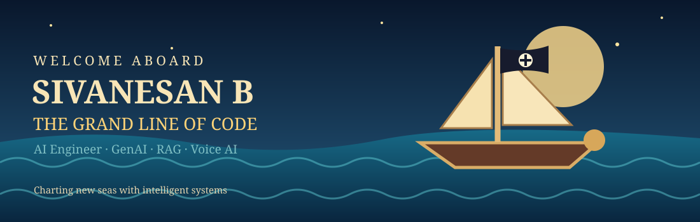
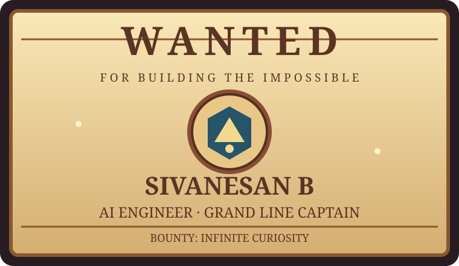

🗺️ Choose your island
THE PROJECT ARCHIPELAGO
⚓ Captain's Log
Pick an island to discover a field of AI engineering and explore matching GitHub repositories.
💰 Treasure Vault

Python · LLMs · RAG · FastAPI · Next.js · Multi-Agent Systems · Voice AI
📜 Wanted: Builders of the Impossible
